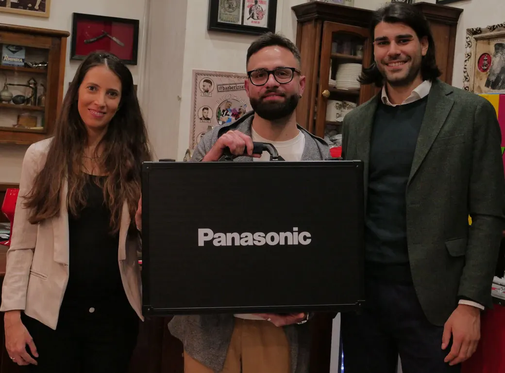

Arriva da Collegno (TO) il vincitore assoluto della quarta edizione di Hair Master Man. 29 anni, di cui più di dieci passati a svolgere quello che ama di più, il mestiere e l'arte di essere barbiere. Giuseppe Schittino ha conquistato il titolo di primo classificato, nonché di Hair Master Man, in una finalissima che ha unito l'Italia intera. A concorrere per il titolo, infatti, sono stati i compagni di viaggio Daniele Boccanera da Roma e Gianbattista Aisoni dalla Sardegna, rispettivamente secondo e terzo classificato.
Ascolti record per la puntata di finalissima
Ascolti record per il programma in onda in prima serata su Canale Italia 84, che nella finalissima ha registrato quasi due milioni di ascolti. "Hair Master Man" – come spiega orgogliosa la casa di produzione del format Incontri Production – "è tra le nostre punte di diamante, un format in costante ascesa e che piace al pubblico italiano." Entusiasti anche i conduttori Thomas Incontri e Rossella Di Pierro, che commentano così la quarta edizione del programma: "siamo felici di regalare alle persone dei momenti di intrattenimento leggero e allo stesso tempo di aver ideato un format che non esisteva prima. Il mestiere di barbiere è un'arte da valorizzare ed è bello che i concorrenti abbiano l'opportunità di mostrare il proprio talento in televisione. Il programma è sempre di più un successo e siamo felici che piaccia così tanto."
La prova della finale: il razor fade
Il razor fade è stata la prova scelta per la puntata di finalissima, taglio che prevede una sfumatura eseguita con il rasoio. I giudici Leonardo Pagliuca, Simone Ranzini e Hiro Vitanza hanno avuto non poche difficoltà nella scelta, in quanto il livello di bravura e tecnica è stato elevatissimo. Nonostante ciò, si sono dimostrati molto professionali, dispensando anche ottimi consigli e giudizi sempre molto costruttivi. A proposito di consigli, non sono mancati anche quelli di Alessio Buccheri, testimonial Panasonic, il quale in ogni puntata ha spiegato come utilizzare al meglio le macchinette e i phon.
Giuseppe sarà giudice della prossima edizione
Giuseppe Schittino, entusiasta per la vittoria e il grande obiettivo professionale raggiunto, sarà da regolamento giudice della prossima edizione del programma, così come lo è stato Simone Ranzini quest'anno. Oltre a questo, tanti premi per il primo classificato, che si è aggiudicato l'ambita valigetta a marchio Panasonic, una bottiglia da tre litri per festeggiare la vittoria a marchio 958 Santero e un kit di forbici di Dell'Aquila Scissors.
Un ringraziamento speciale a RTO L'Altra Radio e la rivista di settore HTrend, media partner della trasmissione. Tutte le puntate sono disponibili on demand sul canale ufficiale YouTube di Incontri Production.